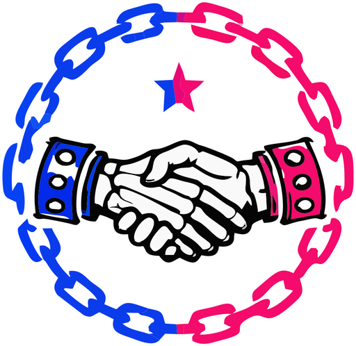

El problema
Información dispersa, redes desactualizadas, ubicaciones difíciles de compartir y clientes que no saben todo lo que un negocio ofrece.

Aliados Fantasma Red local de negocios Quiero participar
24 DE AGOSTO DE 2026 · 2:30 P. M.
Una plataforma creada para que negocios de nuestra comunidad tengan una presencia digital clara, profesional y fácil de compartir.
Logo, portada, ubicación, contacto, promociones y toda tu información en un solo enlace.
QUÉ ES ALIADOS FANTASMA
Muchos negocios ofrecen excelentes productos y servicios, pero no siempre cuentan con una página sencilla donde una persona pueda conocerlos, ubicarlos y contactarlos rápidamente.
Información dispersa, redes desactualizadas, ubicaciones difíciles de compartir y clientes que no saben todo lo que un negocio ofrece.
Un perfil digital propio para reunir datos, redes, promociones, ubicación, horarios, galería y contacto en un mismo lugar.
Facilitar que más personas descubran negocios locales y que cada comercio tenga una presencia digital digna de su esfuerzo.
CÓMO FUNCIONA
Compartes la información principal, logotipo, imágenes y medios de contacto.
Organizamos todo en una presentación profesional adaptada a tu identidad.
Puedes colocarlos en redes, tarjetas, mostradores, empaques o publicidad.
Los clientes conocen tu negocio, consultan promociones y llegan a ti fácilmente.
QUÉ OBTIENE CADA NEGOCIO
La primera versión está enfocada en funciones claras, útiles y fáciles de usar.
Una página propia con nombre, descripción, categoría e identidad visual.
Un acceso rápido que puedes colocar en materiales físicos y digitales.
Tu negocio conserva su estilo, sus colores y su personalidad.
Espacio para mostrar productos, servicios, instalaciones o trabajos.
Publica ofertas y beneficios para que tus clientes sepan qué hay disponible.
Facilita que las personas encuentren tu negocio y sepan cómo llegar.
Todos tus canales de contacto reunidos en botones directos.
La información podrá actualizarse sin tener que rehacer toda la página.
PERFILES DE DEMOSTRACIÓN
Estos ejemplos muestran cómo una misma plataforma puede adaptarse a categorías, estilos y públicos completamente diferentes.
Una identidad oscura, metálica y urbana para una tienda con estilo propio.
Colores cálidos y una presentación cercana para abrir el apetito desde el perfil.
Una imagen cálida y tranquila para destacar bebidas, postres y momentos especiales.
Un perfil sobrio y moderno para mostrar cortes, servicios y formas de reservación.
Una presentación alegre y práctica para comunicar productos, copias y servicios.
Un ejemplo ficticio de un negocio de servicios digitales con identidad tecnológica.
Las tarjetas marcadas como “ejemplo ficticio” se presentan únicamente para mostrar posibilidades de diseño y no representan negocios registrados.
ESTADO DEL PROYECTO
Estamos validando la plataforma con negocios locales antes de agregar funciones más avanzadas.
Estas funciones forman parte de la visión futura. Aún no se presentan como servicios disponibles y se desarrollarán por etapas.
Datos sobre visitas e interacción con el perfil.
Herramientas para fortalecer la relación con clientes frecuentes.
Opciones para anunciar actividades y recibir solicitudes.
Promociones medibles y beneficios especiales.
Más formas de presentar productos y servicios.
Funciones para hacer más sencilla la administración.
LANZAMIENTO GRATUITO
Queremos que los primeros negocios participen en el nacimiento de Aliados Fantasma y nos ayuden a validar la experiencia.
Por eso, durante el lanzamiento, el registro y la creación del perfil digital inicial no tendrán costo.
Solicitar registro gratuitoLa disponibilidad puede estar sujeta a revisión de información y capacidad operativa. Las funciones futuras podrán tener condiciones distintas.
NUESTRA MISIÓN
“Creemos que cada negocio local merece ser descubierto. Detrás de cada mostrador hay una familia, un sueño y años de esfuerzo.”
Aliados Fantasma existe para ayudar a que esos negocios tengan una oportunidad real de crecer en el mundo digital sin perder su esencia, su historia ni la conexión con su comunidad.
RUMBO DEL PROYECTO
Una red para impulsar negocios locales.
Perfiles, directorio y administración.
Validación técnica y visual.
24 de agosto de 2026.
Nuevas funciones según las necesidades reales.
PREGUNTAS FRECUENTES
Sí. Durante la etapa de lanzamiento, el registro inicial y la creación del perfil digital básico no tendrán costo.
Información básica, datos de contacto, ubicación, horarios, logotipo y algunas imágenes. Si todavía no tienes todo, se revisará contigo qué puede utilizarse.
No. El objetivo es darte un enlace propio dentro de Aliados Fantasma que puedas compartir como tu presentación digital.
La estructura será consistente, pero se adaptarán logo, portada, imágenes, información y estilo visual para respetar la identidad de cada negocio.
Sí. La plataforma contempla la actualización de datos. El método exacto dependerá de la etapa y del tipo de cuenta disponible.
La primera etapa se concentrará en perfiles, directorio, imágenes, promociones, contacto, ubicación, redes y administración básica.
Son funciones planeadas para etapas posteriores. Se muestran para explicar la visión, pero no se promete que estén disponibles durante el lanzamiento.
La gratuidad anunciada corresponde a la etapa de lanzamiento. Más adelante podrían existir planes, servicios opcionales o condiciones diferentes, que se comunicarán con claridad antes de aplicarse.
EL LANZAMIENTO COMIENZA EN
24 de agosto de 2026 · 2:30 p. m. · Hora de Ciudad de México
La red ha despertado.
Entrando a Aliados Fantasma…